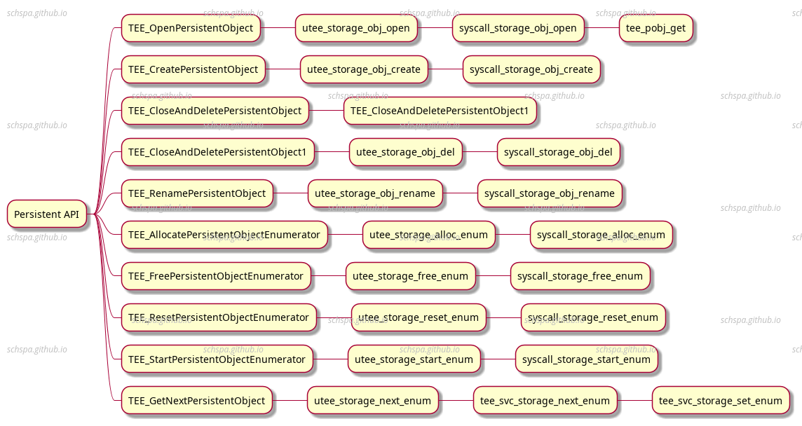
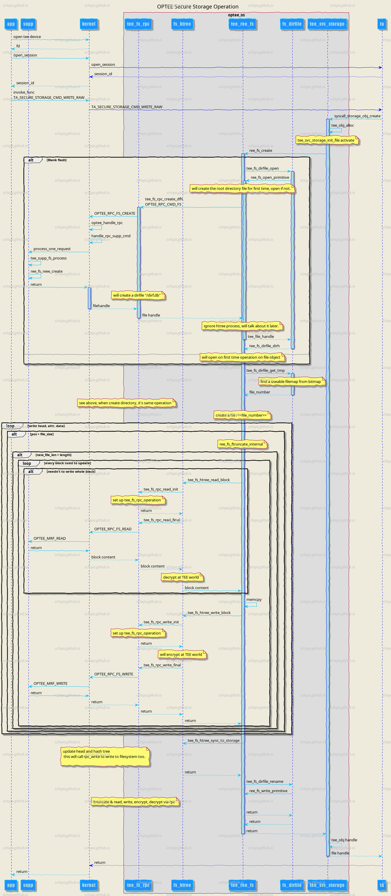

OPTEE persistent-object
Table of Contents
Description
PersistentObject顾名思议，是可以持久化保存的对象，下面简单分析一下实现的原理。
Secure storage
首先，看一下optee如何处理secure数据的存储，加密。
optee官方文档：https://optee.readthedocs.io/en/latest/architecture/secure_storage.html#ree-fs-secure-storage
系统框架：

由上图可知，整个流程大致为：TEE File System在保存文件时，首先通过tee中的文件系统接口调用linux内核中的TEE driver，TEE driver再调用内核态的TEE Supplicant来完成文件系统的访问。最终的文件存储操作是通过ree的文件系统来存储，所以只要ree可以读写文件，这条链路就可以正常运行。
Usage (secure storage)
userspace
- create session
write secure object
TEEC_Result write_secure_object(struct test_ctx *ctx, char *id, char *data, size_t data_len) { TEEC_Operation op; uint32_t origin; TEEC_Result res; size_t id_len = strlen(id); memset(&op, 0, sizeof(op)); op.paramTypes = TEEC_PARAM_TYPES(TEEC_MEMREF_TEMP_INPUT, TEEC_MEMREF_TEMP_INPUT, TEEC_NONE, TEEC_NONE); op.params[0].tmpref.buffer = id; op.params[0].tmpref.size = id_len; op.params[1].tmpref.buffer = data; op.params[1].tmpref.size = data_len; res = TEEC_InvokeCommand(&ctx->sess, TA_SECURE_STORAGE_CMD_WRITE_RAW, &op, &origin); if (res != TEEC_SUCCESS) printf("Command WRITE_RAW failed: 0x%x / %u\n", res, origin); switch (res) { case TEEC_SUCCESS: break; default: printf("Command WRITE_RAW failed: 0x%x / %u\n", res, origin); } return res; }
这里传递了两个参数
- object id
字符串类型id - data
要写入的数据
使用invoke调用TA_SECURE_STORAGE_CMD_WRITE_RAW命令
- object id
delete_secure_object
TEEC_Result delete_secure_object(struct test_ctx *ctx, char *id) { TEEC_Operation op; uint32_t origin; TEEC_Result res; size_t id_len = strlen(id); memset(&op, 0, sizeof(op)); op.paramTypes = TEEC_PARAM_TYPES(TEEC_MEMREF_TEMP_INPUT, TEEC_NONE, TEEC_NONE, TEEC_NONE); op.params[0].tmpref.buffer = id; op.params[0].tmpref.size = id_len; res = TEEC_InvokeCommand(&ctx->sess, TA_SECURE_STORAGE_CMD_DELETE, &op, &origin); switch (res) { case TEEC_SUCCESS: case TEEC_ERROR_ITEM_NOT_FOUND: break; default: printf("Command DELETE failed: 0x%x / %u\n", res, origin); } return res; }
删除操作传入了object id
ta
TA_SECURE_STORAGE_CMD_WRITE_RAW
static TEE_Result create_raw_object(uint32_t param_types, TEE_Param params[4]) { ... /* * Create object in secure storage and fill with data */ obj_data_flag = TEE_DATA_FLAG_ACCESS_READ | /* we can later read the oject */ TEE_DATA_FLAG_ACCESS_WRITE | /* we can later write into the object */ TEE_DATA_FLAG_ACCESS_WRITE_META | /* we can later destroy or rename the object */ TEE_DATA_FLAG_OVERWRITE; /* destroy existing object of same ID */ res = TEE_CreatePersistentObject(TEE_STORAGE_PRIVATE, obj_id, obj_id_sz, obj_data_flag, TEE_HANDLE_NULL, NULL, 0, /* we may not fill it right now */ &object); if (res != TEE_SUCCESS) { EMSG("TEE_CreatePersistentObject failed 0x%08x", res); TEE_Free(obj_id); return res; } res = TEE_WriteObjectData(object, data, data_sz); if (res != TEE_SUCCESS) { EMSG("TEE_WriteObjectData failed 0x%08x", res); TEE_CloseAndDeletePersistentObject1(object); } else { TEE_CloseObject(object); } ... }
- TEE_CreatePersistentObject
- TEE_WriteObjectData
- TEE_CreatePersistentObject
TA_SECURE_STORAGE_CMD_DELETE
static TEE_Result delete_object(uint32_t param_types, TEE_Param params[4]) { const uint32_t exp_param_types = TEE_PARAM_TYPES(TEE_PARAM_TYPE_MEMREF_INPUT, TEE_PARAM_TYPE_NONE, TEE_PARAM_TYPE_NONE, TEE_PARAM_TYPE_NONE); TEE_ObjectHandle object; TEE_Result res; char *obj_id; size_t obj_id_sz; /* * Safely get the invocation parameters */ if (param_types != exp_param_types) return TEE_ERROR_BAD_PARAMETERS; obj_id_sz = params[0].memref.size; obj_id = TEE_Malloc(obj_id_sz, 0); if (!obj_id) return TEE_ERROR_OUT_OF_MEMORY; TEE_MemMove(obj_id, params[0].memref.buffer, obj_id_sz); /* * Check object exists and delete it */ res = TEE_OpenPersistentObject(TEE_STORAGE_PRIVATE, obj_id, obj_id_sz, TEE_DATA_FLAG_ACCESS_READ | TEE_DATA_FLAG_ACCESS_WRITE_META, /* we must be allowed to delete it */ &object); if (res != TEE_SUCCESS) { EMSG("Failed to open persistent object, res=0x%08x", res); TEE_Free(obj_id); return res; } TEE_CloseAndDeletePersistentObject1(object); TEE_Free(obj_id); return res; }
- 打开对象
TEE_OpenPersistentObject - 删除对象
TEE_CloseAndDeletePersistentObject1
- 打开对象
从ta可以看到tee中使用了TEE_*PersistentObject的api
TEE PersistentObject
API optee_os/lib/libutee/include/ltee_api.h
/* Data and Key Storage API - Persistent Object Functions */ TEE_Result TEE_OpenPersistentObject(uint32_t storageID, const void *objectID, uint32_t objectIDLen, uint32_t flags, TEE_ObjectHandle *object); TEE_Result TEE_CreatePersistentObject(uint32_t storageID, const void *objectID, uint32_t objectIDLen, uint32_t flags, TEE_ObjectHandle attributes, const void *initialData, uint32_t initialDataLen, TEE_ObjectHandle *object); void TEE_CloseAndDeletePersistentObject(TEE_ObjectHandle object); TEE_Result TEE_CloseAndDeletePersistentObject1(TEE_ObjectHandle object); TEE_Result TEE_RenamePersistentObject(TEE_ObjectHandle object, const void *newObjectID, uint32_t newObjectIDLen); TEE_Result TEE_AllocatePersistentObjectEnumerator(TEE_ObjectEnumHandle * objectEnumerator); void TEE_FreePersistentObjectEnumerator(TEE_ObjectEnumHandle objectEnumerator); void TEE_ResetPersistentObjectEnumerator(TEE_ObjectEnumHandle objectEnumerator); TEE_Result TEE_StartPersistentObjectEnumerator(TEE_ObjectEnumHandle objectEnumerator, uint32_t storageID); TEE_Result TEE_GetNextPersistentObject(TEE_ObjectEnumHandle objectEnumerator, TEE_ObjectInfo *objectInfo, void *objectID, uint32_t *objectIDLen);
这里共有10个api提供了open，new，enum，rename的功能

TEE_CreatePersistentObject
这个函数是对optee_os中系统调用的封装
从上个章节可知最终调用了optee_os中的syscall_storage_obj_create
- 根据storage_id获取文件系统接口 `struct tee_file_operations`
- 根据object_id获取tee_pobj
- 生成新的tee_obj并将其与tee_pobj绑定
- 调用tee_svc_storage_init_file初始化文件
- 将tee_obj返回给用户空间程序（TA）
重点内容：
- TODO pobj
- tee_svc_storage_init_file
- 将tee_obj_attr保存在文件中
... if (attr_o) { res = tee_obj_set_type(o, attr_o->info.objectType, attr_o->info.maxKeySize); if (res) return res; res = tee_obj_attr_copy_from(o, attr_o); if (res) return res; o->have_attrs = attr_o->have_attrs; o->info.objectUsage = attr_o->info.objectUsage; o->info.keySize = attr_o->info.keySize; res = tee_obj_attr_to_binary(o, NULL, &attr_size); if (res) return res; if (attr_size) { attr = malloc(attr_size); if (!attr) return TEE_ERROR_OUT_OF_MEMORY; res = tee_obj_attr_to_binary(o, attr, &attr_size); if (res != TEE_SUCCESS) goto exit; } } else { res = tee_obj_set_type(o, TEE_TYPE_DATA, 0); if (res != TEE_SUCCESS) goto exit; } ... o->ds_pos = sizeof(struct tee_svc_storage_head) + attr_size; /* write head */ head.attr_size = attr_size; head.keySize = o->info.keySize; head.maxKeySize = o->info.maxKeySize; head.objectUsage = o->info.objectUsage; head.objectType = o->info.objectType; head.have_attrs = o->have_attrs; res = fops->create(o->pobj, !!(o->flags & TEE_DATA_FLAG_OVERWRITE), &head, sizeof(head), attr, attr_size, data, len, &o->fh); if (!res) o->info.dataSize = len;代码中调用了两次tee_obj_attr_to_binary，第一次为了获取大小，第二次保存
调用fops->create创建对象
fops table: tee_svc_storage_file_ops
storage_id fops TEE_STORAGE_PRIVATE ree_fs_ops/rpmb_fs_ops TEE_STORAGE_PRIVATE_REE ree_fs_ops CFG_RPMB_FS rpmb_fs_ops
- 将tee_obj_attr保存在文件中
All Operation flow

从上面的流程可以看到，系统在访问文件时，需要通过一系列的流程，最后通过ree中的tee_supplicant服务来完成最终的文件访问操作，系统会在TEE中对文件进行加解密的操作，这样ree就无法获取tee中保存的文件的内容，从而安全的存储我们所需要的数据。
在此基础上，TEE还对数据进行了加密，hash校验，防止ree有机会去窜改数据。